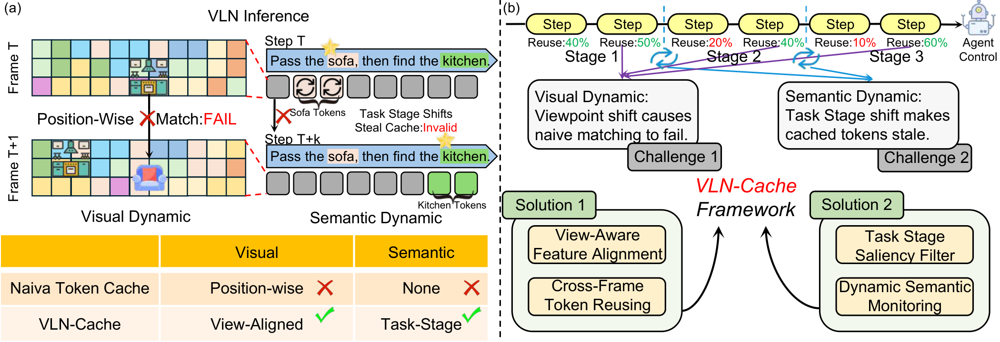

如果你要在会移动的相机上做跨帧 KV 复用，这篇给了唯一必要的修正：复用前必须先知道当前 token 对应上一帧的哪个 token。不做这一步，位置对齐会以「高相似度」的名义把错误内容塞回注意力。
- 最小可复用件
- 用深度 + 相对位姿把当前 token 反投影再投回上一帧，得到对应索引
πt(i)，把复用检索从i改成πt(i)；FOV 校验 + 余弦阈值0.85作为两级门。 - 主要风险
- 位姿/深度噪声会让
π偏几个 patch，后果与「不补偿」同类；语义门的分数s定义在论文里没有给全，阈值0.70 / 0.30很难照搬；导航 SR 与操控成功率不可混谈。 - 复现门槛
- 免训练、免改权重；但需要 RGB-D、相机内参、相邻帧相对位姿（仿真真值或 odometry），以及能读到 attention softmax 的白盒模型。硬件报告为单卡 A100-40GB。
1 核心摘要
VLN（Vision-and-Language Navigation）把 VLM 当成每一步都要前向一次的 planner：agent 在连续环境里走几十步（原文 Figure 2 的例子约 75 步），每步都要把当前 RGB(-D) 观测编码成视觉 token，送进语言 decoder 产出下一个 waypoint。VLA-Cache 那一类跨帧 token 缓存在这类场景里是最自然的加速候选——墙、地板、走廊在相邻帧几乎不变。但作者指出，这类方法隐含了一个从未被检验的假设：同一图像坐标在相邻帧看到的是同一块物理表面。
论文把这个假设拆成两种独立失效，并各自配一个模块：
- 视觉动态：相机的平移与旋转让物理静止的表面在图像坐标上整体位移。位置对齐会把
[i, i+k]的墙和[i+δ, i+k+δ]的另一块表面对上，产生「张冠李戴」的复用；同时把只是位移、其实完全可复用的 token 误判为需重算。作者的量化口径是「复用差」Δrt（对齐匹配相似度减去位置匹配相似度），在全轨迹上平均约 10.3%，在 Exploration（频繁转向）与 Goal（近距离逼近、视角突变）阶段更大，Cruising 阶段较小。修法是 view-aligned remapping：用深度dt(i)与内参K反投影到 3D，乘相对位姿Tt→t−1，再投回上一帧，并做3×3邻域细化，得到对应索引πt(i)。 - 语义动态：指令是分段的，「走过客厅、再进阳台」——客厅在通过之后就不再是决策依据，而原本背景里的沙发变成下一个地标。这类 token 外观几乎不变，但缓存状态已经过期。作者的量化口径是 top-k 注意力焦点集合的 Jaccard 距离
Dsemt，同样呈阶段非均匀分布。修法是 task-relevance saliency filter：每个 token 算指令条件相关分st(i)，只要s > τabs（当前强相关）或|st − st−1| > τΔ（正在发生相关性跃迁）就硬否决复用。
两个信号以乘法合成复用掩码 m = mvis · (1 − msem)，即严格的 AND 语义；再按层做熵自适应预算 ρℓ = clip(ρmax − α Hℓ, ρmin, ρmax)，默认 τv=0.85、τs=0.70、k=3、ρmax=0.90。整个过程免训练、不改权重、不换 attention kernel，作为 forward 的 wrapper 存在。
判定：这是四篇里唯一「问题定义换掉了」的一篇——它不是在调 VLA-Cache 的阈值，而是把「复用候选怎么产生」的前提改了；代价是把一个纯视觉、自包含的判定，变成一个依赖几何传感器的判定。相对 VLA-Cache 的增量有三点：① 检索索引从 i 改成 πt(i)；② 任务相关性从「一次剔除高分 token」升级为「高相关 + 突变率」双向否决；③ 层预算从熵策略继承但被明确用来吸收两种动态带来的抖动。实验只在 R2R-CE 的 val_unseen 上做，1.52× 步级加速、SR 63.1 对 backbone 64.3。
2 复用机制定位
与 VLA-Cache 不同，这篇的主战场是前半段：谁有资格进入候选集（几何对应是否存在），以及候选进入后什么时候必须作废（语义是否漂移）。缓存粒度与层预算沿用了同一套骨架，只做了「逐层比例随熵浮动」的微调；动作接口完全没动——它复用 System-2 planner 的 KV，waypoint 仍由原 decoder 自回归产生。
| 维度 | VLN-Cache 的做法 | 实现含义 |
|---|---|---|
| 判定信号 | 三级串联：几何对应是否落在有效视场内 → 重映射后余弦相似度是否 > 0.85 → 指令条件相关分是否越界（>0.70 或单步变化 >0.30） | 前两级用 RGB-D + 位姿，第三级用 decoder 已有的 cross-attention；不需要额外网络、不需要解码期 logit |
| 复用单位 | 单帧 M=196 个视觉 token，在 L=28 个 decoder 层上各自一份 K/V | 不是 patch 块、不是整帧、不是层间共享；粒度与 VLA-Cache 相同，是 token × layer |
| 失效与重算 | 逐 token 局部失效；语义门是硬否决（hard veto），一旦命中就无条件全量重算该 token；无有效深度或出视场的 token 也强制重算 | 没有「整帧 flush」或「整段 cache 清空」的动作；失效范围等于单 token，因此不需要重新 prefill 整帧 |
| 层级策略 | 每层复用上限 ρℓ 由该层 attention 熵 Hℓ 线性折减，bound 在 [ρmin, 0.90] | 熵从已有 softmax 里读，无额外前向；若框架不暴露 attention，则退化为全局 ρ ≤ ρmax |
| 在线性 | 因果：只用 t−1 帧缓存与当前观测，不用未来帧；不做训练、不做离线标定以外的拟合 | 额外开销是每步 O(M(D + k² + LqD)) 的掩码计算，与层数 L 无关；但引入了对深度/位姿的同步依赖，且每步耗时随复用率波动 |
一句话概括它回答的三个问题：用什么信号决定重算——几何对应 + 相似度 + 语义跃迁三段；缓存粒度——逐层逐 token 的 K/V，不是粗糙的图像块；失效是局部还是整体——纯局部，且语义侧的失效被设计成不可被视觉相似度「压过」的硬否决。
3 问题与动机
3.1 VLA-Cache 的三条前提，在移动平台上逐条塌掉
VLA-Cache 的判定可以抽象成三段固定启发式：视觉相似度提名静态候选、语言条件注意力剔除任务相关 token、按层熵调节复用率。这三段在桌面机械臂上成立，是因为相机固定在基座或腕部，相邻控制步的画面对齐良好、任务在整段 episode 内是同一个（「把茄子放进锅里」不会中途改目标）。VLN 把三个条件同时破坏：
- 同位置 = 同内容不成立。agent 持续平移与旋转，一转角，整幅画面的内容就沿图像坐标整体滑移。作者给的直观量级是一个转角可让一段静止墙面漂移四个 patch（原文 Figure 3 的例子），此时位置匹配配到的是完全不同的表面。
- 指令条件相关性一次性成立不成立。VLA-Cache 用一次 attention 阈值把「任务相关 token」永久排除在复用集之外；VLN 的指令是分段推进的，相关性会随子目标完成而反向变化——曾被排除的地标可能重新变得关键，曾被保留的背景可能彻底失效。
- 层敏感度稳定不成立（弱一些）。作者认为浅层处理变化缓慢的低层特征，深层编码任务相关表征、在指令切换时突变，因此固定复用率会错配算力，需要用每步的熵去调制。
更隐蔽的后果是失效是静默的：错配的 token 未必相似度低，因为墙与墙、地板与地板本来就很像。一个偏了几个 patch 的「高相似度匹配」会把错误表面的旧状态注入注意力，模型不会报错，只是 grounding 慢慢偏掉。这也是后文消融里「去掉几何对齐、复用率还更高、SR 却掉」的原因。
3.2 论文自己的证据：两个可测的失效量
作者没有停在思辨，而是定义了可观测的两个量：复用差 Δrt = meani(ralignt,i − rpost,i)，以及语义焦点漂移 Dsemt = 1 − |St ∩ St−1| / |St ∪ St−1|（St 为第 t 步指令条件注意力最高的 top-k 视觉 token 集合）。前者恒正、平均约 10.3%，说明「视角位移是搬家而不是销毁」——复用机会仍在，只是被错误的匹配方式丢掉了；后者随导航阶段起伏，说明语义失效是持续但非均匀的，且无法被任何纯几何准则捕获。
| 对比对象（论文点名） | 匹配准则 | 语义处理 | 在 VLN 下的失效方式 |
|---|---|---|---|
位置对齐式 token caching（消融中 πt(i)=i，等价于把 VLA-Cache 直接搬到 VLN） | 同索引余弦相似度 | 一次剔除高分 token | 视角位移下配错表面；复用率虚高（表中 43%），SR 掉到 62.4 |
| 纯外观门（去掉语义门） | 位置对齐 + 视觉相似度 | 无 | 视觉稳定但语义过期的地标继续被复用，SR 62.9 |
| 纯语义门（去掉视觉门） | 仅几何对应 + 相关分 | 双条件否决 | 外观已变的 token 被复用，特征漂移，SR 61.7（低于不缓存的 64.3） |
| VLN-Cache（完整） | 几何对应 + 视觉门 + 语义否决 | 双条件硬否决 | SR 63.1 / SPL 57.6，1.52× |
注意「纯语义门」这一行：它是本文最有信息量的负面结果——去掉视觉门比不缓存还差。这说明几何对应解决的是「配给谁」，视觉门解决的是「这块表面到底变了没」，两者不可互相替代。论文同时把 STCache、EgoPrune、FastV、token merging 等列为相关工作，但没有在实验里与它们逐一对比（仅与无缓存 backbone 及自身消融对比）。
4 方法拆解

原图：作者 LaTeX 源码 fig/fig1.pdf（原文 Figure 1）。(a) 位置对齐匹配在视角位移下失败；指令分段使「sofa token」在 Stage 2 之后失去相关性；(b) 两类挑战与两个方案，以及各阶段复用率 40/50/20/40/10/60% 的示意。
4.1 视觉动态：把「同位置」换成「同一物理点」
输入是当前帧每个视觉 token 的中心坐标 ut(i) 与其深度 dt(i)。对应关系由一次完整的投影往返给出：
πt(i) = N( Π( Tt→t−1 · Π−1(ut(i), dt(i); K) ) )
其中 Π−1 用内参 K 反投影到相机坐标系 3D 点，Tt→t−1 把该点变换到上一帧相机坐标系，Π 投回像素平面，N(·) 在 3×3 邻域内做细化，吸收「连续投影坐标落在离散 patch 网格之间」的量化误差。参数 k=3 就是这个邻域半径，k=0 退化为位置对齐。
几何投影成功并不等于可以复用：表面可能被遮挡、光照可能变化、场景里可能有动态物体。因此再加两级门，同时满足才算视觉可复用（mvis=1）：
πt(i)落在有效视场内——否则说明对应表面已经出画，缓存里没有合法对照物；cos(vt(i), vt−1(πt(i))) > τvis，默认0.85——确认重映射后的两个 token 确实在描述同一块内容。
易被忽略的实现细节：缺深度或深度不可靠的 token 不进复用集，直接重算。也就是说这套方法的加速上限被「深度覆盖率」卡着；室内仿真里深度是免费的，真机上则取决于深度相机在远处墙面与玻璃上的失效情况。
4.2 语义动态：双条件检测 + 硬否决
每个 token 每步算一个指令条件相关分 st(i)（由视觉 token 对语言 query 的 cross-attention 聚合而来；论文只说明了它是「instruction-conditioned attention score」，没有给出归一化方式与聚合层的公式，这一处无法照抄）。命中任一条即标记 msem=1、强制刷新：
- 绝对高相关：
st(i) > τabs（实验中记作τs=0.70；方法节的τabs与实验节的τs应对应同一阈值，但论文未显式说明）。当前就是决策依据的区域，缓存里的旧状态无论多相似都不足以代表它。 - 相对突变：
|st(i) − st−1(i)| > τΔ（Δs=0.30）。用于捕捉「量值不大但正在跃迁」的过渡区，典型就是子目标切换的瞬间。
作者刻意把语义侧做成硬否决而不是软惩罚，理由是：视觉稳定只是复用的必要条件，若用加权打分，一个高置信度的视觉匹配会把语义上的关键刷新「压下去」，而这恰恰是最危险的错误方向。合成方式是乘性 AND：
mt(i) = mvis,t(i) · (1 − msem,t(i))
4.3 跨帧 KV 拼接与层自适应预算
得到掩码后，逐层拼接 K/V，复用项从对齐位置πt(i) 取，刷新项用当前计算值：
Kℓ,(i)t ← m·Kℓ,(πt(i))t−1 + (1−m)·Kℓ,(i)t（原文记作 K̂，即拼接后的值），V 同理。
这里有两个工程取舍值得记：① 每一个位置都会被填满（要么来自缓存、要么来自新算），因此不会产生硬 drop 那种不规则张量与额外 attention mask 开销，kernel 仍可整块跑；② 位置相关的分量（如 RoPE）不做复用——只有 Pnew 里的 token 在 t 时刻拿到新位置编码。这意味着复用 token 的 K 里仍带着它在上一帧索引 πt(i) 上的位置信息，与它此刻的索引 i 并不一致。作者把它视为可接受的近似（几何对应已保证内容一致），但这是一个应该在复现时单独消融的点：位移越大，位置编码的错配越明显。
层预算由注意力熵给出：ρℓt = clip(ρmax − α·Hℓt, ρmin, ρmax)，高熵层（分布分散、判断不确定）拿更小的复用预算，低熵层可以逼近 ρmax=0.90。Hℓ 直接从已有 softmax 读出，不额外前向。论文未给出 α 与 ρmin 的具体取值，也只用了一张定性图（Figure 4 右侧不同层的复用格数示意）而非定量表。

原图：作者 LaTeX 源码 fig/fig4.pdf（原文 Figure 4）。左：视角位移下的可见性/相似度检查得出 Vision Reuse Mask；左下：指令随阶段更新，cross-attn 得出 Semantic Refresh Mask；右：两掩码相乘后，各层按 ρℓ 决定复用多少格。
4.4 开销与在线边界
额外的选择开销为 O(M(D + k² + LqD))，与 decoder 层数 L 无关；节省的是每层 WK/WV 对全部视觉 token 的投影，按复用率 ρ 计约 4ρLMDdkv。以 InternVLA-N1（L=28, M=196, D=3584, dkv=512）在 ρ≈0.31 下折算，每步约省 12.3 GFLOPs，相当于总 attention FLOPs 的 18.3%；缓存放 GPU HBM，每帧约 11.2 MB（A100 显存的 0.027%），不需要 CPU offload 或 PCIe 传输。
在线边界很清楚：因果、单帧历史、白盒。它只保留上一帧的 KV（没有多帧历史栈），只看当前观测，不做任何训练或微调；但要求能拿到深度、内参、相邻帧相对位姿，并且（为语义门与层预算）能读到 attention。这三项在「仿真 + 开源 VLA」里都成立，在「黑盒 API + 单目相机」里全都不成立——这是它比 VLA-Cache 更难迁移的根本原因。
5 证据与实验
设置。backbone 为 InternVLA-N1（论文中亦称 DualVLN），7B、基于 Qwen2.5-VL；环境为 VLN-CE 连续仿真器中的 R2R，评测集 val_unseen 共 1,839 episodes；指标为 NE↓、OS↑、SR↑、SPL↑，效率侧为每步延迟、episode 墙钟时间与 token 复用率；硬件单卡 A100-PCIE-40GB（BF16、SDPA）。全程免训练，只与「关掉全部缓存的标准推理」对比。
| 方法（Table I） | Backbone | NE↓ | OS↑ | SR↑ | SPL↑ |
|---|---|---|---|---|---|
| NaVid | Vicuna-7B | 5.47 | 49.1 | 37.4 | 35.9 |
| MapNav | Qwen2-7B | 4.93 | 53.0 | 39.7 | 37.2 |
| UniNaVid | Vicuna-7B | 5.58 | 53.3 | 47.0 | 42.7 |
| NaVILA | Llama-3-8B | 5.22 | 62.5 | 54.0 | 49.0 |
| StreamVLN | Qwen2-7B | 4.98 | 64.2 | 56.9 | 51.9 |
| DualVLN（= 无缓存 backbone，本文基线） | Qwen2.5-VL-7B | 4.05 | 70.7 | 64.3 | 58.5 |
| VLN-Cache | Qwen2.5-VL-7B | 3.93 | 71.4 | 63.1 | 57.6 |
读这张表要注意三件事。① 前五行是不同 backbone 的方法，不能与本行横向比较，只能说明该 backbone 在 R2R-CE 上的位置；本文真正可比的只有最后两行（同一 backbone、同一权重）。② 相对 backbone，SR 由 64.3 降到 63.1、SPL 由 58.5 降到 57.6，论文称 ΔSR = −1.2；但 NE 与 OS 反而变好（4.05→3.93、70.7→71.4）。缓存让平均导航误差下降、成功率下降，这两个方向不一致，论文没有解释；这可能是单一 run 的波动，也可能说明缓存改变了轨迹的「保守程度」。复现时应把这一点当作待查项而不是卖点。③ 结论段写的是「SR drop < 1.5%」，与表中 1.2 个点一致，但正文摘要把口径写成「competitive」，读者需自己换算。
| 效率（Table II） | 每步延迟 | 步级加速 | episode 加速 | token 复用率 |
|---|---|---|---|---|
| DualVLN（无缓存） | 637 ms | 1.00× | 1.00× | 0% |
| VLN-Cache | 419 ms | 1.52× | 1.52× | 31% |
效率数据来自 10 个 episode 的 pilot run（原文明确写了「10-episode pilot run」），而精度是在 1,839 个 episode 上测的——两者的样本量差别很大，1.52× 的置信度低于 SR 的置信度。episode 墙钟时间由 114.7 s 降到 75.5 s。另需注意：论文 Figure 5 的图内标注写的是 559→370 ms（1.51×），与 Table II 的 637→419 ms 不是同一次测量，本页以 Table II 为准。
| 消融（Table III，R2R-CE val_unseen） | SR↑ | SPL↑ | 步级加速 | token 复用率 |
|---|---|---|---|---|
| w/o VLN-Cache（基线） | 64.3 | 58.5 | 1.00× | 0% |
w/o View-Aligned Remap（π=i，即 VLA-Cache 直搬） | 62.4 | 56.8 | 1.41× | 43% |
| w/o Semantic Gate | 62.9 | 57.3 | 1.47× | 30% |
| w/o Visual Gate | 61.7 | 56.1 | 1.61× | 49% |
| Full VLN-Cache | 63.1 | 57.6 | 1.52× | 31% |
消融的结构性结论是可靠的：任一模块去掉都会掉点，且「去掉视觉门」掉得最多（低于不缓存）。但有一处措辞与数字不符——正文说去掉几何对齐后「复用了相当比例（comparable token reuse ratio）」，而表中是 43% 对完整的 31%，并不接近。更准确的读法是：位置对齐会「多复用 12 个点，而且复用错了」，这比单纯掉点更能说明问题。

原图：作者 LaTeX 源码 fig/fig2.pdf（原文 Figure 2）。左轴为跨帧相似度：View-Aligned（青）恒高于 Position-Wise（橙），两者间距即复用差，图内以星标标出；右轴为注意力焦点漂移率（绿），在 Exploration 与 Goal 阶段抬升，对应语义失效加剧。
超参（第 VI-E 节）。τv=0.85（视觉门，控制接受复用的激进程度）、τs=0.70（语义门刷新频率）、k=3（邻域半径）、ρmax=0.90；Δs=0.30、ε=10−6 报告为低敏感并固定。敏感性用 Fig. 8（τv、τs）与 Fig. 9（k、ρmax）给出，图上以星标标出所选配置；具体网格点数值未在正文表格化，无法逐点核验。作者自陈不提供自动调参方法，理由是目前连续 VLN 环境缺乏统一标准。
指标口径提醒。SR/SPL/NE/OS 衡量的是「是否到达目标、路径是否高效」，与操控任务的「抓取是否成功」不是同一类量：导航允许多次纠错重规划，单步误差会被后续 waypoint 吸收；操控的成功判定是终局的、不可逆的。因此本页的 1.52× / −1.2 SR 不能与 VLA-Cache 的 LIBERO 成功率或 latency 数字放在同一张表里比较。
6 优点、局限与 VLA 适配
可迁移
① 「先对齐、再比较」这条判定顺序：任何相机在动的场景（移动底盘、无人机、腕部相机大幅运动）都应先解析出跨帧对应，再谈相似度。② 语义否决的硬性优先级：视觉稳定只是必要条件，任务相关性变化可以单方面否决复用——这个不对称设计可以直接搬到 VLA-Cache 的框架里，替换它的「一次性剔除」。③ 逐位置填满、不做硬 drop 的实现方式，对需要固定张量形状的部署栈很友好。④ 语义失效的度量（top-k 焦点集 Jaccard）可以当作一个廉价的在线监控量，即使不做缓存，也能用来判断「当前步是否发生了任务阶段切换」。
不成立的前提
① 需要可靠的深度与相对位姿：仿真里免费，真机上依赖 RGB-D 与 odometry；桌面机械臂的腕部相机在近距离夹爪处深度噪声极大，反投影会直接把 π 打偏。② 「场景静止」假设：VLN 里主要是相机在动、世界不动；操控里被操作的物体本身在动，π 即使算对，对应表面也已经变了——这种情况下失效的原因不是匹配错，而是内容真的换了，视觉门会（幸运地）拦住，但复用率会掉。③ 单帧历史：只保留上一帧，一旦某帧因转向出现大面积失效，下一步无法从更早的稳定帧回填。④ 指令分段的显式性：VLN 的指令天然分段（子目标串行），操控指令通常是单一目标，语义门的「阶段切换」信号弱得多，双阈值未必有意义。
延迟与闭环风险
延迟。论文只给理论复杂度 O(M(D+k²+LqD))，没有给出掩码计算本身的实测毫秒数，也没有给 1.52× 的 breakdown（ViT / prefill / decode 各段省了多少）。从工程直觉看，反投影 + 3×3 邻域搜索是逐 token 的散乱访存，在 GPU 上很容易变成 kernel launch 与随机读的瓶颈；如果实现不好，省下的 12.3 GFLOPs 可能被掩码开销吃掉一部分。复现时必须单独测这一步。
闭环。两处会引入可变延迟：① 转向时复用率骤降（论文明确说「sharp turns 时复用更低」），单步延迟上升；② 语义门在子目标切换时成片否决，同样造成尖峰。平均 1.52× 不代表 p99 延迟也改善——对 10 Hz 级的控制回路来说，方差比均值更重要。论文报告的是平均值与 episode 总时长，未报告延迟分布，这是一个应该在真机上补测的点。此外，复用率抖动本身会改变模型输出的细微数值，若下游有平滑/滤波，可能与缓存策略产生耦合振荡；论文的定性结果只说「轨迹与无缓存基线无差别」，没有做逐步动作差的一致性度量。
与机械臂场景的差异，以及最小改造方案
三处结构性差异：自运动（移动平台的底盘在地面上大范围平移与转向，桌面臂通常只有厘米级末端运动，或使用固定的外部相机）、轨迹长度（R2R 一条 episode 跨多个房间、几十步；LIBERO 一类任务虽是百余控制步但视角几乎不变）、指令更新（VLN 是分段长指令，操控是单句短指令）。因此这篇的价值不在数字，而在判定顺序。
如果要在桌面 VLA 上复用，最小改造是：只保留「几何对应」这一层，且把深度源换成任务相关的稳定几何——外部固定相机的多视图三角化、或桌面平面假设下的单应（homography）对齐；腕部相机则用 hand-eye 标定把 token 反投影到桌面平面。语义侧保留「高相关即刷新」的单条件即可（对应 VLA-Cache 的 task-relevant eviction），把「突变率」条件换成「子任务完成检测」或「动作 chunk 结束」。验收上先看两件事：π 的重投影误差（应为亚 patch 级）与掩码开销占单步延迟的比例（建议 <10%）。
7 落地清单
- 先验前提自检：确认能同时拿到 RGB-D、相机内参
K、相邻帧相对位姿Tt→t−1，且模型可读 attention softmax。三者任一缺失，就只做「几何对齐」或只做「语义否决」，不要硬凑三段式。 - 对齐精度先于缓存：单独记录
πt(i)的重投影误差与出视场比例，目标是把误差压到 1 个 patch 以内（k=3的邻域才有意义）；k=0必须能复现精度崩塌，否则说明你的场景本来就没有视角位移问题。 - 阈值起点：
τv=0.85、语义τs=0.70、Δs=0.30、ρmax=0.90、k=3；在自采的 20–50 条轨迹上做二维网格扫（τv×τs），选取「SR 掉不超过 1 个点」前提下的最大加速点，而不是最大复用率点。 - 消融必须做四组：完整 / 无几何对齐（
π=i）/ 无视觉门 / 无语义门。第三组是安全检查——若「无视觉门」不低于基线，说明你的语义分数实际上在替代视觉门，需要重新检查s的归一化。 - 延迟按分布验收：报告 p50 / p95 / p99 单步延迟与掩码开销占比，而不只是平均值；转向或子目标切换段应单独统计，避免「平均 1.5×、尖峰比基线还慢」。
- 位置编码单独消融：论文只对
Pnew更新 RoPE，复用 token 保留旧索引的位置编码。把「复用 token 也重算 RoPE」作为对照跑一遍，能直接量化这个近似值多少精度——这也是判断能否把该机制接到自己模型（RoPE / 绝对位置 / 无位置编码）上的关键依据。
来源：Zihao Zheng, Zhihao Mao, Xingyue Zhou, Jiayu Chen, Maoliang Li, Xinhao Sun, Hailong Zou, Zhaobo Zhang, Xuanzhe Liu, Donggang Cao, Hong Mei, Xiang Chen, "VLN-Cache: Enabling Token Caching for VLN Models with Visual/Semantic Dynamics Awareness", arXiv:2603.07080v3 (cs.RO), 2026-04-29；导航指标取自 Table I，效率取自 Table II，消融取自 Table III，超参取自第 VI-E 节，复用差与语义漂移量取自第 III 节与 Figure 2。论文未提供代码或项目页链接，亦未在已核验的公开材料中确认正式发表信息。
图像说明：三张图均取自作者 arXiv LaTeX 源码（fig/fig1.pdf、fig/fig2.pdf、fig/fig4.pdf），以 PyMuPDF 按矢量原图渲染为 PNG（Figure 1 为 300 dpi，其余 420 dpi），未做裁切、未含 PDF 排版图注；图注中的解释性文字为本页所加。
相关页面：VLA-Cache · 跨控制步 KV 复用 · TVCache · head 可靠性与层稳定性 · LAC · 可学习的复用策略 · 返回专题二